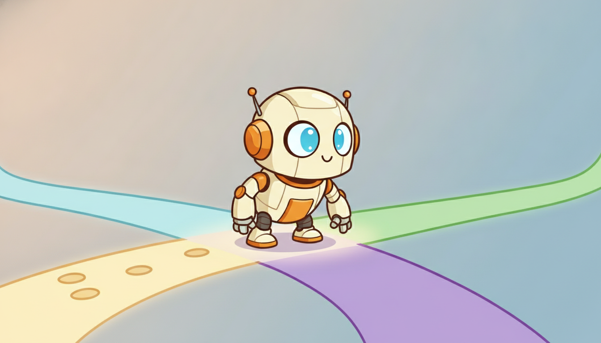

"I predict the future, I infer the present, and then I act and change both. The third habit is the one that keeps getting me in trouble, and the one that makes me intelligent."
A Reinforcement Learner Still Exploring
Temporal intelligence is three capabilities stacked on one another: prediction estimates what will happen next, reasoning infers what is going on and what caused it, and decision making chooses actions that bend the future toward a goal. They are not three separate fields to be studied in three separate books; they are one loop, and the same latent-state and sequence-model machinery powers all of it. This is the central thesis of the entire book. Classic time-series texts stop at the first capability and treat the data as something that merely arrives. We treat the data as something an agent both reads and writes, and that single shift in stance is why prediction, reasoning, and decision making belong between the same two covers.
In Section 1.2 we argued that time is not just another feature axis: order carries information, the future is partially knowable, and yesterday constrains tomorrow. That raises an obvious question. Given a stream of observations unfolding in time, what does an intelligent system actually do with it? The honest answer has three parts, and the relationship between those parts is the spine of this book. A system can estimate the continuation of the stream, it can infer the hidden structure that generated the stream, and it can intervene to steer the stream. Forecasting, the subject of Parts II and III, is only the first of these. The machinery that makes forecasting work (latent state, sequence models, the discipline of conditioning on the past) turns out to be exactly the machinery that reasoning and decision making need, which is why we develop all three as one continuous argument rather than as three disconnected literatures.
1. Prediction: Estimating the Future From the Past Beginner
Prediction is the most familiar temporal task and the foundation everything else stands on. Given observations up to the present, $x_{1:t} = (x_1, \dots, x_t)$, the goal is to say something about the future $x_{t+1:t+h}$ over a horizon of $h$ steps. The fully probabilistic statement of the problem is to learn the conditional distribution of the future given the past,
$$p\bigl(x_{t+1:t+h} \mid x_{1:t}\bigr),$$which captures not only the most likely continuation but the whole spread of plausible futures, the object that Part V (Chapter 19) treats in full when it builds calibrated prediction intervals. Often we want a single number rather than a distribution, a point forecast $\hat{x}_{t+1}$. The principled way to collapse the distribution to a point is to name a loss function $\ell$ and choose the forecast that minimizes its expected value,
$$\hat{x}_{t+1} = \arg\min_{\hat{x}} \; \mathbb{E}\bigl[\, \ell(x_{t+1}, \hat{x}) \;\big|\; x_{1:t} \,\bigr].$$The choice of loss is not cosmetic; it silently selects which summary of the future you report. Under squared error the optimal point forecast is the conditional mean, under absolute error it is the conditional median, and under an asymmetric pinball loss it is a conditional quantile. We will return to this loss-shapes-the-answer principle repeatedly, and it becomes decisive in subsection 5 when the loss is no longer about forecast accuracy but about the quality of a downstream decision.
Everything in Parts II and III is, at bottom, a family of answers to this one estimation problem. The classical linear models of Chapter 5 assume the conditional mean is a linear function of recent history; the deep sequence models of Part III replace that linear map with a learned nonlinear one, but the target $p(x_{t+1:t+h} \mid x_{1:t})$ never changes. Prediction is passive in a precise and important sense: the forecaster reads the stream but does not write to it. The data distribution is whatever the world hands over, and a good forecaster simply describes it as faithfully as possible. Hold on to that word "passive". Subsection 3 breaks it, and breaking it is what separates a forecaster from an agent.
There is no such thing as "the" forecast of a future value. Every point forecast is the answer to the question "what number minimizes my expected loss?", and different losses give different numbers from the very same predictive distribution: mean under squared error, median under absolute error, a quantile under pinball loss. This is why you cannot evaluate or even define a good forecast without first naming what a forecast error costs you, and it is the seed of the decision-aware forecasting idea that closes this section.
2. Reasoning: Inferring Hidden State and Causal Structure Intermediate
Prediction asks "what will happen next?" Reasoning asks two deeper questions that prediction alone cannot answer: "what is going on right now?" and "what caused this?" The observations $x_{1:t}$ are usually not the whole story. They are noisy, partial glimpses of an underlying state $z_t$ that we never see directly: a patient's true physiological condition behind a handful of bedside vitals, a market's latent regime behind a stream of prices, a machine's hidden wear behind its vibration trace. Reasoning is the act of recovering that latent state and the structure connecting states over time.
The canonical form is state estimation. Given the observations, we want the distribution over the hidden state, $p(z_t \mid x_{1:t})$. Estimating the present state from observations up to the present is filtering; revising past states in light of later evidence is smoothing. The Kalman filter of Chapter 7 solves this exactly for linear-Gaussian systems, and the hidden Markov model of the same chapter solves the discrete-state version. These are reasoning machines: their job is not to extrapolate the observation but to explain it, to answer "what configuration of the unseen world is most consistent with what I have seen?" The same target reappears in learned form throughout the book, because, as the temporal thread of Chapter 1 promises, the recurrent network of Chapter 10 is precisely a learned filter that carries a latent state forward through time.
Beyond recovering state, reasoning encompasses inferring temporal and causal structure: detecting that an event occurred, ordering events in time, expressing constraints in temporal logic, and distinguishing genuine causation from mere correlation in time. A forecaster can tell you sales will rise next week; only causal reasoning can tell you whether the promotion caused the rise or merely coincided with it, which is the difference between a description and an explanation. This is the province of Part VII, where Chapter 30 develops temporal reasoning and causality in depth. The crucial point for the book's architecture is that reasoning produces the state on which both prediction and decision making depend. You forecast better when you forecast from an inferred latent state rather than from raw observations, and you decide better when you decide from an estimate of how the world actually is rather than from how it merely appears.
Watch the object $z_t$, the latent state, as it travels through this book. Chapter 7 estimates it with a Kalman filter (reasoning), Chapter 13 learns to carry it with a structured state-space model (prediction), and Chapter 23 turns it into a belief state that a POMDP agent acts on (decision making). It is one idea wearing three costumes. A book that separated forecasting, inference, and control would tell this story three times and never let the reader notice it is the same story.
3. Decision Making: Acting to Shape the Future Advanced
Prediction reads the stream and reasoning explains it. Decision making writes to it. An agent chooses an action $a_t$ at each step, and that action changes what happens next: the next state and the next observation depend on what the agent just did. This is the decisive break from passive forecasting. A forecaster's predictions never alter the series it forecasts, but an agent's actions alter the very distribution it is trying to optimize over. The data is no longer something that merely arrives; it is something the agent helps create. The illustration below captures this stance of an agent stepping into the future it is choosing.

The standard scaffold for this is the agent-environment loop, formalized as a Markov decision process (MDP) in Part VI, Chapter 22. At each step the agent observes the state $s_t$, selects an action $a_t$ according to a policy $\pi(a_t \mid s_t)$, receives a scalar reward $r_t$, and the environment transitions to a new state $s_{t+1}$ drawn from its dynamics $p(s_{t+1} \mid s_t, a_t)$. The agent does not minimize a one-step forecast error. It maximizes the expected cumulative future reward, the return, which with a discount factor $\gamma \in [0, 1)$ that down-weights distant rewards is written
$$G_t = \sum_{k=0}^{\infty} \gamma^{k} \, r_{t+k}, \qquad \text{and the goal is} \quad \max_{\pi} \; \mathbb{E}_{\pi}\!\left[\, \sum_{t=0}^{\infty} \gamma^{t} r_t \,\right].$$Two features of this objective have no analogue in forecasting. First, it is forward-looking over a long horizon: a good action may pay off many steps later, so the agent must credit present choices for future consequences, the credit-assignment problem at the heart of reinforcement learning. Second, the expectation is taken under the policy itself, so changing the policy changes the distribution of data the agent sees. This feedback (the policy generates the data that trains the policy) is what makes sequential decision making both powerful and treacherous, and it is why Part VI needs eight chapters where forecasting needed careful estimation alone. The thread continues to its frontier in Chapter 28, where the MDP returns yet again, this time recast as a sequence-modeling problem so that the very Transformer machinery built for prediction in Part III is repurposed to choose actions.
The single deepest difference between forecasting and decision making is that an agent's actions alter the distribution it is optimizing over, while a forecaster's predictions leave the data untouched. A forecaster optimizes against a fixed world; an agent optimizes against a world it is simultaneously changing. Every hard phenomenon unique to reinforcement learning (exploration, distribution shift from the policy, long-horizon credit assignment) flows from this one fact, and none of it appears in passive prediction.
4. The Unifying Loop: Perceive, Predict, Decide, Act Intermediate
The three capabilities are not a menu to choose from; they compose into a single cycle that an intelligent temporal system runs over and over. The system perceives an observation, reasons to update its estimate of the hidden state, predicts the consequences of the actions available to it, decides on the action with the best predicted return, acts, and then perceives the world's response, which feeds the next turn of the loop. Figure 1.3.1 draws this cycle.
The figure makes the book's structural claim visible. Prediction is not a sibling of decision making; it is a sub-skill nested inside it. To choose an action well you must predict what each candidate action would lead to, which is exactly the predictive distribution of subsection 1 with an action slipped into the conditioning, $p(x_{t+1:t+h} \mid x_{1:t}, a_t)$. Reasoning, in turn, supplies the latent state that both the predictor and the decider consume. A forecaster who never acts is simply an agent that has been frozen at the predict stage and forbidden to continue around the loop. That is why mastering prediction is the right place to start a book on temporal intelligence, and why it cannot be the place the book ends.
A pure forecaster is the meteorologist who tells you it will rain. An agent is the same meteorologist who then cancels the picnic, and who, by cancelling it, guarantees you will never find out whether the picnic would have been rained out. The act of deciding quietly destroys the counterfactual the forecast was about. Welcome to the strange world of sequential decision making, where the only way to learn what an action would have done is to do it.
5. Why One Book: The Thesis Advanced
We can now state plainly why this book refuses to stop at forecasting. The classic time-series curriculum treats prediction in isolation: fit a model to a fixed dataset, report the error, close the book. That framing quietly assumes the forecast is the product. But forecasts are almost never the product. A demand forecast exists to drive an ordering decision; a risk forecast exists to size a position; a failure forecast exists to schedule maintenance. The forecast is an intermediate, and treating it as the final deliverable optimizes the wrong thing. The payoff lives one step downstream, in the decision the forecast feeds, and you cannot reason about that payoff if your book has ended at the forecast.
The unifying argument is also mechanical, not merely philosophical. The same latent-state and sequence-model machinery serves all three capabilities. A state-space model is a filter (reasoning), a forecaster (prediction), and the transition model of a planner (decision making), depending only on what you ask of it. A Transformer is a language of conditional prediction in Part III and a policy in Chapter 28. Because the machinery is shared, separating the three into different books forces a reader to learn the same recurrence, the same attention mechanism, and the same notion of latent state three times over, never seeing that they are one. Teaching them together is not a packaging convenience; it is the only way to make the transfer of machinery visible, and that transfer is the book's distinguishing contribution. The full map of which classical idea returns in which learned form is the temporal thread laid out in the chapter index, and every later chapter pays back a forward pointer planted here.
To make the prediction-feeds-decision coupling concrete and runnable, Code 1.3.1 contrasts a passive forecaster with a policy that acts on the same forecast. The forecaster only reports a number; the policy turns that number into an order quantity, and the action changes the world's next state.
import numpy as np
rng = np.random.default_rng(0)
# A passive forecaster: it reads demand history and predicts next-step demand.
# It never touches the series it forecasts (the future arrives regardless).
def forecaster(history):
"""Point forecast = recent mean (the squared-error-optimal summary)."""
return float(np.mean(history[-7:]))
# A policy: it uses the SAME forecast, but then ACTS by placing an order.
# Its action changes next period's inventory, i.e. it writes to the state.
def policy(forecast, inventory, safety=5.0):
order = max(0.0, forecast + safety - inventory) # order up to target
return order
# One turn of the perceive -> predict -> decide -> act -> observe loop.
inventory, history, cost = 10.0, list(rng.poisson(8, 14)), 0.0
for t in range(20):
pred = forecaster(history) # PREDICT next demand
order = policy(pred, inventory) # DECIDE how much to order
inventory += order # ACT: stock arrives
demand = rng.poisson(8) # ENVIRONMENT reveals demand
sales = min(demand, inventory)
shortage = demand - sales # lost sales if we under-ordered
inventory -= sales
cost += 1.0 * inventory + 5.0 * shortage # holding cheap, stockout costly
history.append(demand) # PERCEIVE: log the new observation
print(f"cumulative decision cost over 20 steps: {cost:.1f}")
Notice what Code 1.3.1 measures. It does not report how accurate the forecast was; it reports the cost of the decisions the forecast drove. A forecaster tuned to minimize squared prediction error need not minimize this cost, because the asymmetric penalty (a stockout costs five times more than holding a unit) makes the median or a high quantile the right summary to act on, not the mean. This is the loss-shapes-the-answer principle of subsection 1, now operating one level up: the relevant loss is the decision loss, not the forecast loss.
Who: A supply-chain data science team at a mid-sized grocery chain replenishing perishable stock across 300 stores.
Situation: Each store's daily order was driven by a demand forecast. The team had spent a quarter upgrading the forecaster from exponential smoothing to a deep model and had cut the mean absolute forecast error by 14%.
Problem: Despite the more accurate forecasts, spoilage rose and stockouts barely moved. The decision metric that the business actually cared about, total cost of waste plus lost sales, got slightly worse.
Diagnosis: The forecaster was trained to minimize symmetric squared error, so it reported the conditional mean. But for a perishable item a stockout (an unhappy customer) and an overstock (a discarded unit) have very different costs. The ordering policy needed a specific demand quantile, not the mean, and the more "accurate" mean forecast pulled orders in the wrong direction precisely on the skewed, high-variance days that drive most of the cost.
Decision: Rather than chase still-lower forecast error, the team made the forecast decision-aware: it trained the model with a pinball loss at the cost-implied quantile and, for the highest-value SKUs, optimized the order quantity directly against the holding-versus-stockout cost.
Result: Forecast MAE actually ticked up slightly, but total spoilage-plus-stockout cost fell by 9%. The lesson the team wrote on the whiteboard: optimize the decision, not the forecast.
Lesson: Prediction and decision making are coupled. A forecast is only as good as the decision it enables, which is exactly why this book develops the two together rather than declaring victory at the forecast.
The argument of this section is a live research front. Decision-focused (or decision-aware, or "smart predict-then-optimize") learning trains a forecaster against the downstream decision loss rather than a generic accuracy loss, so the model is rewarded for forecasts that lead to good actions; the SPO+ framework of Elmachtoub and Grigas and its 2024 to 2026 successors in inventory and energy markets formalize exactly the coupling Code 1.3.1 illustrates. From the other direction, reinforcement learning as sequence modeling (the Decision Transformer of Chen et al., 2021, and the Trajectory Transformer) turns decision making back into prediction by training a sequence model to autoregressively generate actions conditioned on a desired return, collapsing the predict-decide distinction this section drew and reuniting it inside one architecture, the subject of Chapter 28. The most ambitious 2024 to 2026 thread, foundation agents, pushes further still: a single pretrained sequence model that perceives, predicts, reasons over latent state, and acts across many tasks, running the entire loop of Figure 1.3.1 with one set of weights. The boundaries this section draws for clarity are, at the research frontier, exactly the boundaries people are dissolving.
If you only ever read Part II and III of this book, you will become an excellent fortune teller: superb at saying what comes next, powerless to do anything about it. The remaining parts are the difference between Cassandra, who predicted perfectly and changed nothing, and an agent, who predicts adequately and changes everything. We recommend reading to the end.
An ICU monitors a patient's heart rate, blood pressure, and oxygen saturation once per minute. For this single data stream, write down one concrete instance each of (a) a prediction task, (b) a reasoning task, and (c) a decision-making task. For each, state precisely what is being estimated or chosen, and identify which of the three changes the future data distribution and why. Then explain how the reasoning task's output (an estimate of the patient's hidden physiological state) would improve both the prediction and the decision.
Extend Code 1.3.1. First, sweep the safety stock parameter and plot cumulative decision cost against it; find the value that minimizes cost. Second, replace the mean forecaster with one that returns the 80th percentile of the recent demand window, and compare the optimal cost of the two forecasters under the same asymmetric cost. Which wins, and how does your answer change if you make the stockout penalty equal to the holding cost? Connect your finding to the loss-shapes-the-answer principle of subsection 1.
The perceive-predict-decide-act loop of Figure 1.3.1 assumes the agent can observe the state it needs. Pick a real system (a recommender, a trading bot, or a thermostat) and argue which arrow of the loop is hardest to realize in practice. Is it perceiving a noisy or partial observation, reasoning to a usable latent state, predicting consequences under an imperfect model, or assigning credit across a long horizon? Justify your choice and name the later part of this book that takes that difficulty head on.